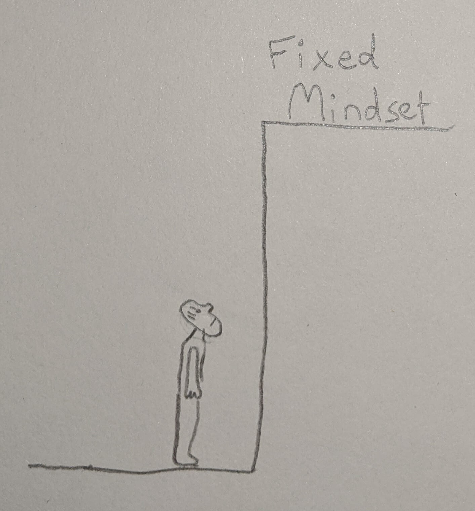

What is Cognitive Behavioural Therapy?
I think therefore I feel
You may have heard the term Cognitive Behavioral Therapy before and wondered what it's all about. That was me. I saw it recommended as a scientifically proven way to treat depression & anxiety. But I wondered how learning a theoretical framework could suddenly reduce my bouts of depression? I want to give you a few key takeaways of CBT and how you can practice it in your everyday life.
1. CBT is a form of self-therapy.
Self-therapy is the ability to perform psychological therapy on yourself, without having an external person. When we have an episode of depression or anxiety, we're not going to be near a therapist straight away. By becoming our own therapist, we are going to be emotionally more resilient, and be able to get on top of thoughts while they are occurring. This takes us to the next key point.
2. Our Emotions & Behaviours are caused by how we interpret the external world.
The CBT framework is based on the premise that our interpretation of the external world is the cause of our emotions towards it and ourselves, which then govern our behaviors.
The events occurring in the world filter through our set of beliefs, thoughts, and biases, and from these produce an emotion. These can be unhealthy emotions, which lean us towards self-destructive behaviors, and healthy emotions, which lean us towards constructive behaviors.
The role of CBT is to acknowledge that how we are feeling is the result of our interpretation of the world and our place in it, whether this be conscious or not. Our role as self-therapists is to bring these interpretations in the form of thoughts, biases & beliefs to the surface to be examined. This allows them to be questioned and ultimately replaced with healthy alternatives.
3. Observe your thoughts
The first step of using CBT in everyday life is to observe your thoughts. Not to judge them as bad or good. Just to see them as they occur. Label them as a thought when you see them happening. The more you become the observer of your thoughts, the easier it is to question and replace eventually them.
4. People interpret events differently. And in doing have different reactions.
Two people witnessing the exact same event in the world can have different interpretations of it. One person may interpret the event as negative, resulting in negative emotions and behaviors, while another person may interpret it as positive, resulting in positive emotions and behaviors. What's causing the difference? The event is the same, but the two people's thoughts, biases, and beliefs are different.
Even if both people interpret the event as a bad thing, their emotional reactions and behaviors to it can be entirely different. For example a relative dying. This could trigger a cascade of self-destructive behaviors by the first person, interpreting the event as "unfair and cruel". Whereas the relative dying could trigger a cascade of positive emotions and behaviors by the second person - although they may interpret the event as sad, the event showed them "life is fleeting and we should seize every moment. They lived a good life and I want to do them proud".
Example
You look out for your elderly Aunt by visiting her every fortnight to help around the house. Doing odd jobs she can't, like cleaning the windows and changing the light bulbs. One fortnight, instead of going to visit her, you take an offer up by your friends to go skiing and forget to let her know. Your Aunt got impatient waiting for you and decided to try and change a lightbulb herself. She lost her balance on the ladder and fell, breaking her hip.
Negative response
You interpret the event as entirely your fault, resulting in a guilty response which is as follows:
You conclude you've done something terrible and feel deeply guilty. You assume more personal responsibility than may actually be legitimate, discounting or not considering other factors. You may believe that some form of punishment is deserved and/or imminent.
You may look for more evidence to support you have done a bad thing, discounting or ignoring competing evidence.
You try to escape your guilty feelings by begging for forgiveness, promising to yourself or others that you'll never do a bad thing again. You may punish yourself for your wrong-doing.
Positive response
You interpret the event as unfortunate and wished you had contacted your Aunt, but ultimately understand it is not entirely your fault.
You look at actions in context and with understanding before making a judgment about what has happened. You consider mitigating factors of the situation and do not believe that punishment is deserved and/or imminent.
You don’t look for further evidence that you've done something bad, neither do you look for or assume that others hold you responsible for what has happened.
You face up to the healthy pain that comes with knowing that you could have done better. You may ask for forgiveness but understand you are capable of forgiving yourself. You understand the reasons for your wrongdoing and act on that understanding. You avoid defensiveness and excuse-making.
You are able to challenge negative thoughts that arise with competing viewpoints - She could have rung someone else. She could have waited till the end of the day to get in contact.
5. We can challenge our interpretations of events.

Our interpretations of events are not the final word. Our brain creates our interpretation based on past experiences, following the path of least resistance. Although this might use less energy by our brain at that moment, it can be detrimental to our well-being.
We have the ability to question our interpretation, asking whether what has been thought is actually the truth. We become scientists of our thoughts, instead of seeing them as facts that are unquestionable, as Cognitive Behavioural Therapists we treat them as hypotheses that need to be tested.
There are multiple ways of challenging them.
1. We find an alternative explanation of what has happened. Say you suddenly find a friend is avoiding you. They won't answer your messages and you saw them turn the other walking down the street. You may think
"That person is being very rude. Suddenly we're friends, next I can't even talk to them. How dare they! I'm going to give them a piece of my mind!".
If we catch ourselves having this thought, we don't have to take it at face value.
We can question whether this is the only explanation. A relative might have died and they can't cope to talk to anyone at the moment or they might be going through a job loss or breakup. By coming up with alternative interpretations, we are able to step back from our immediate one, lessening the intensity of it. Even if any of our alternatives aren't true, we've allowed the possibility of alternative interpretations.
2. We can gain perspective on the situation by surveying. Whether that be through talking to other people or looking at survey results online, we can gain perspective on the event we experienced and the interpretation we drew.
Say you have disturbing thoughts of killing your family. From the event that's happened in our own head (the disturbing images or thoughts), you could interpret this as evidence that you're not safe or you can't be trusted. Resulting in unhealthy emotions and behaviors like trying to never be left alone with family members, avoiding items that could inflict harm to others (knives, scissors), and trying to rid your mind of any of these thoughts happening again.
In this situation we can ask other people (possibly therapists or someone who has your best interests at heart) if they have experienced a similar thing and what they think it means, gathering data for and against your original interpretation that I'm unsafe and can't be trusted. Looking at survey data online can give you a perspective on what you've experienced. It turns out having thoughts of causing harm to others is quite common - these thoughts are so common that 85% of the non-OCD population admits to having unwanted violent thoughts, including thoughts about harming themselves and loved ones [1]. With more surveying you may learn how other people deal with this - people simply discount their unpleasant images and don’t worry that they mean anything sinister. This can change your whole view of what you've experienced means.
After we've gained alternative viewpoints on our situation, we are in a far better position to evaluate what we've experienced, leading to a healthier response to it.
3. Stepping back completely from them. Changing our interpretation of an event by coming up with alternative realities of what we experience as well as using the survey method to gain a wider and more holistic perspective are two ways to use CBT to become more resilient in the face of distressing experiences. While this is a huge step towards living an emotionally healthy life, we are using thoughts against thoughts. In the face of adverse situations, this is sometimes not enough. The third technique is stepping back from all thoughts and just being aware of them occurring.
Your thoughts are a river flowing past. We are the observer on the bank of this river. We can choose to pick them out and entertain them if we want, but we don't have to, we can just be aware we are having them.
Mindfullness Meditation is the practice of sitting with your thoughts and feelings and observing them as they come up. You don't engage with them, instead, allow them to pass on through. Practicing this regularly can help you be more aware of your thoughts, and when the time does come in emotionally distressing situations, you are able to put it to practice and step back from what's occurring in your mind. Just as a Navy Seal trains for the hard times, so too are we training our minds to be able to step back when we need it most.
6. Spotting Rigid Based Thoughts.
After having a go with CBT you might notice types of thoughts that cause the most negative reaction to events. These are Rigid Based Thoughts. Thoughts that leave little wiggle room for alternative realities. Rigid based thoughts come in the form of:
must be like this, I need to, I have to, there is no other way
You might create unrealistic demands for yourself and others.
7. Spot Extreme thoughts.
Extreme thoughts come in the form of all or nothing, or blowing things out of proportion. When we think it is the end of the world when we can't find the keys, avoid extrapolating that to unrealistic consequences.
I lost the keys, now I'm going to be late and miss the meeting, then I'll lose that client, and go bankrupt.
#When you catch yourself creating moutains out of molehills, assess the situation in a different way.
7. Beliefs for Emotional Resilience.
We've seen our thoughts, beliefs, and biases determine how well we respond to an event. Are there thoughts and beliefs that set you up for emotional health? Yes! Just as Rigid based Thoughts curtail our emotional health, Flexible thoughts allow us to interpret an event in a multitude of ways, allowing us to make the most of any situation.
Flexibility is the hallmark of psychological health - the consequence of not holding rigid expectations, standards or ideals.
Being flexible doesn't mean anything goes. We can still have standards, boundaries, and beliefs. Instead of I must be treated with respect, change it to a preference I'd like to be treated with respect, but I understand not everyone will. Whenever you notice yourself having rigid-based thoughts, see if you can purposively turn it into a flexible thought.
8. Remove Self Rating
Low self-esteem - having a dim view of yourself - is a belief that can lead you to interpret situations negatively, resulting in jealousy, envy, anger, anxiety, and depression.
Inherit in low self-esteem is rating yourself by some measure & deciding your worth based on this. Inherent in this idea is labeling (deciding what is bad & good) & over-generalization. You believe you're only as worthwhile as your achievements, love life, social accolades, or financial prowess.
Instead take the flexible belief ' the world is a complex place, everything has complexity in it, there isn't one measure or worthiness we can put on ourselves or others.'
9. Practicing Self Acceptance
Practicing self-acceptance is the process of removing self-rating. Not comparing or rating yourself based on some metric. When things go wrong, your self-esteem is built into your core beliefs external to the current circumstances, allowing you to carry on in the best possible emotional condition.
The following is a list of beliefs that can help you build more self-esteem by practicing self-acceptance.
1. As a human being, you're unique, multi-faceted - you can't rate your worth by one external measure.
2. You're ever-changing & developing
3. You're too complex & continuously changing to measure all of your beings
4. Humans by their nature are fallible & imperfect - developing perspective & taking a holistic view
5. Because you are complex, multi-faceted - you by definition can't be rated or measured as a whole human - maybe some aspect like in school but it has no indication of your 'worth' as a human being.
Consider yourself as a work in progress. You can't reliably globally label the worth of a human. Even if you could one day, it would change the next.
10. Growth Mindset vs Fixed Mindset
You may have heard of Growth Mindset, the belief that we are not limited by talent or intelligence determined at birth, but are able to grow and get better through deliberate practice. This is in contrast to Fixed Mindset - where we decide we are just not good at something because we couldn't do it straight away, or found it hard.

Growth Mindset is a Flexible Belief that allows us to approach challenges with the possibility that we are capable of overcoming them, we just need more practice, information, or time - we hold the possibility that we could still do it. Fixed Mindset is a Rigid Belief - that we are either good at this or not good, there isn't the possibility that we could improve over time.
11. Giving up Control.
Underlying things like anxiety, panic disorders & OCD is control. We can cope with uncertain situations, so we try hard to control them. Giving up control is the best thing you can do. We live in an uncertain universe - birth, death & taxes are the only things we can be certain of. Developing beliefs that allow for uncertainty is one way to give up the control - get perspective (lots of people deal with uncertainty and bad things every day).
Engaging in things we don't want tends to exacerbate them - if we worry we think we can get all the worrying out of the way, suppressing thoughts will stop the thoughts - remains down trying to control things out of our control. It will bring on the thing we are so actively trying to avoid.
No matter how negative or troubling your thoughts are, they are not the problem. It's the importance or meaning you attach to these thoughts that cause the problem. View your thoughts as thoughts, not as facts, and take them with a bucket of salt.
Conclusion
It should be stated that there are no wrong or right thoughts - there are thoughts that can help us move more constructively and flexibly through life and thoughts that can cause emotional distress and destructive behaviors. The same thoughts can have different impacts on different people.
The crucial step in using CBT in your everyday life is to make the thought-feeling link: seeing clearly for yourself the connection between what goes through your mind and your resulting emotions. When you see this connection, it can help you to make much more sense of why to challenge and change your thoughts.
References
[1] OCD Harm percentage https://www.madeofmillions.com/ocd/harm-ocd
[2] Cognitive Behavioural Therapy for Dummies by Rob Willson & Rhena Branch
Additional Information
A quote from Albert Ellis, an early proponent, and developer of CBT:
“There are three musts that hold us back: I must do well. You must treat me well. And the world must be easy”. Our emotional discomfort is not caused directly by adversity but by ourselves. It is our irrational beliefs and thoughts that generate the suffering.
Irrational beliefs end up dictating our emotions and decisions, ultimately governing our relationship with the world and the problems that arise. That is why it is essential to be aware of their existence, and to place more adaptive thoughts in the place of rigid ones.
Below is Albert Ellis's list of common irrational beliefs. Can you come up with alternative flexible thoughts to replace each one?
1. Meaningful people should love us and accept what we do i.e. family members and friends
2. To be valuable, it is essential to be very competent and realize great achievements in all possible areas
3. Certain people are vile, evil, and infamous and should be blamed and punished for their perversity
4. It is terrible that things do not go the way we planned them
5. Human misfortune is due to external causes
6. If something is dangerous or scary, one must feel very restless and obsessed with the possibility of it happening
7. It is easier to avoid certain responsibilities and difficulties in life than to face them
8. It is normal to depend on others because we need someone stronger to trust. Expanding on this more - the more we depend on others, the less we choose for ourselves, and the more we let ourselves be carried away by the opinions and desires of others. The more we leave the important decisions in the hands of others, the fewer opportunities we will have to learn, so that we feed the cycle of dependence and insecurity.
9. When something from the past shocked us, it will continue to affect us indefinitely
10. We must feel very concerned about the problems of the others
11. You always have to maintain control and aim for perfection
12. We do not control our emotions, happiness is something that simply happens